autoplot() and the plot_*() functions
return ggplot objects. The figures are ready for a manuscript as they
are, and anything about them can be changed with the usual ggplot2
grammar: add labels, scales, themes or layers with +. This
gallery shows each figure once, then the changes most often needed
before a figure goes into a paper or onto a slide.
The examples use three fits: tuberculosis mortality with empirical
quantile intervals (the default), all six causes of death in
us_mortality, and the prevalence of each body mass index
category in ontario_bmi.
library(joinpoint)
library(ggplot2)
tb <- subset(us_mortality, cause == "Tuberculosis")
fit_tb <- joinpoint(tb, year, rate, kmax = 3)
fit_all <- joinpoint(us_mortality, year, rate, by = "cause", kmax = 3,
ci_method = "parametric",
control = jp_control(aapc_last = 10))
fit_bmi <- joinpoint(ontario_bmi, year, count = count, population = births,
by = "category", type = "percent", kmax = 2,
method = "bic", ci_method = "parametric")Trend figures
autoplot() draws the observed values, the fitted model,
the joinpoints and the APC of each segment. plot() prints
the same figure and returns the fit, so use autoplot() to
modify a figure.
The default figure
The labels sit next to their segments and avoid each other and the fitted curves. An asterisk marks an APC that differs significantly from zero. The shaded band is the pointwise 95% interval of the fitted curve; it is drawn when the fit has empirical quantile intervals.
autoplot(fit_tb)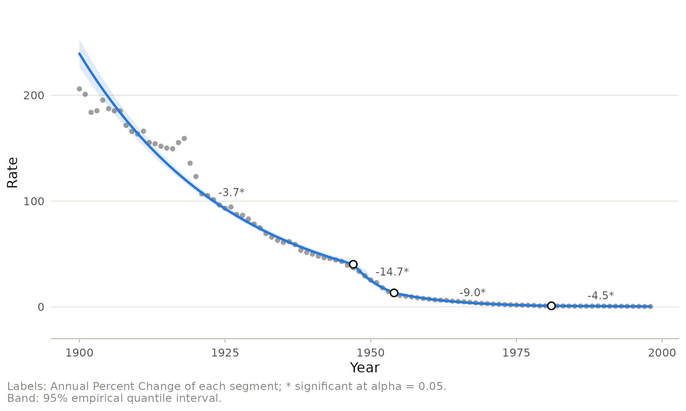
Uncertainty on the figure
labels = "ci" writes the confidence interval under each
APC, and joinpoint_ci = TRUE shades the confidence interval
of each joinpoint location. Where a two-line label cannot be placed
without overlapping another label or a curve, it may be cut to the APC
alone.
autoplot(fit_tb, labels = "ci", joinpoint_ci = TRUE)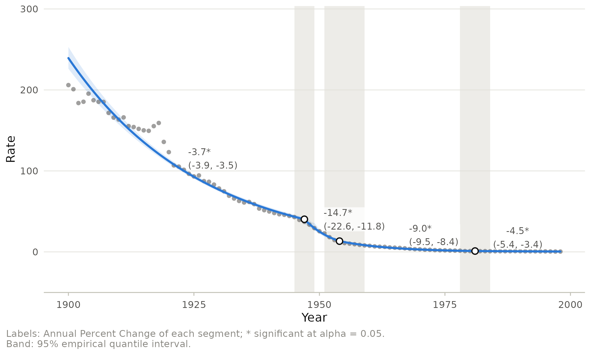
Trend direction and a logarithmic axis
color_by = "trend" colors each segment by its direction:
significantly increasing, significantly decreasing or stable. On a
logarithmic axis (log_y = TRUE) equal percent changes have
equal slopes, which suits log-linear models. Several cohorts are drawn
as panels, each with its own scale; ncol sets the number of
columns.
autoplot(fit_all, color_by = "trend", log_y = TRUE, ncol = 3)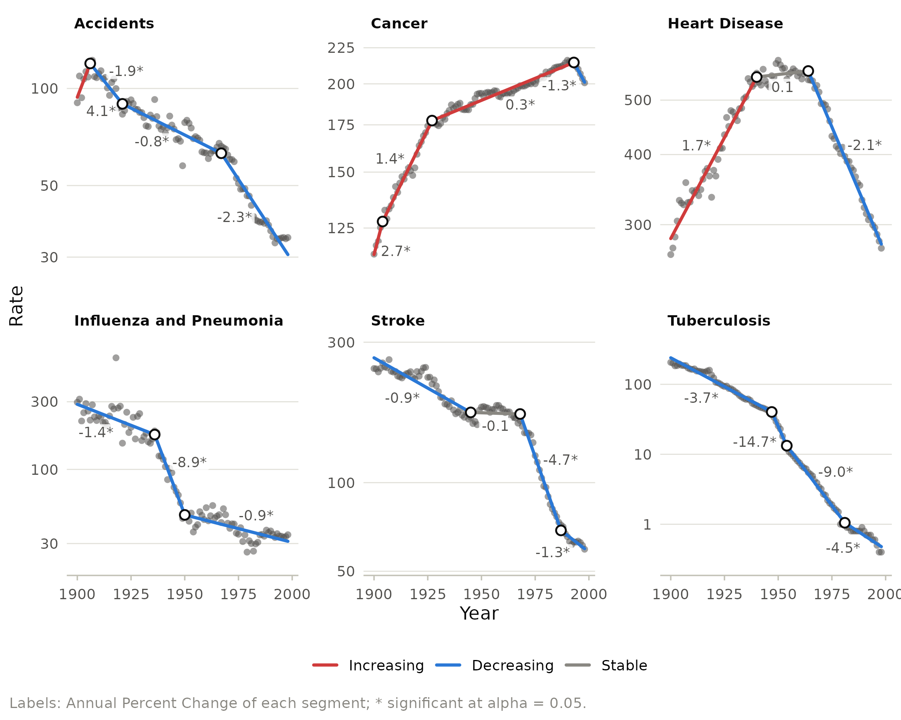
Several series in one panel
layout = "overlay" draws the cohorts in one panel, and
cohorts picks some of them by position. With
aapc = TRUE each legend entry carries the average annual
percent change of the first AAPC range, the full range by default.
Segment labels are off by default when series are overlaid, to keep the
panel readable.
levels(us_mortality$cause)
#> [1] "Accidents" "Cancer"
#> [3] "Heart Disease" "Influenza and Pneumonia"
#> [5] "Stroke" "Tuberculosis"
autoplot(fit_all, layout = "overlay", cohorts = c(2, 3, 5), aapc = TRUE,
log_y = TRUE)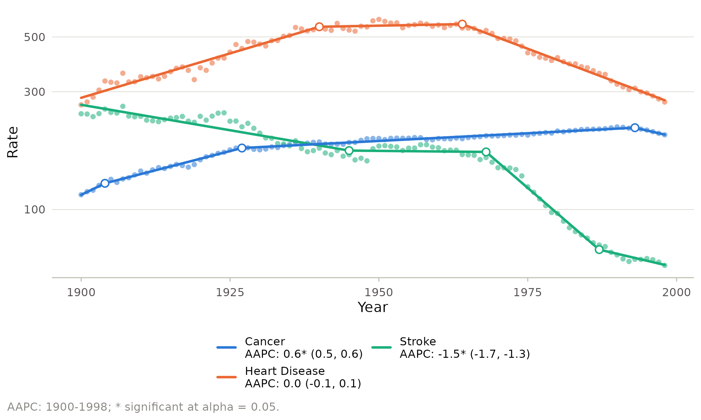
Observed values with confidence intervals
When the data carry standard errors, given with se or
calculated from count and population,
error_bars = TRUE adds the 95% interval of each observed
value.
autoplot(fit_bmi, error_bars = TRUE, ncol = 3) +
labs(x = "Fiscal year (start)", y = "Prevalence (%)")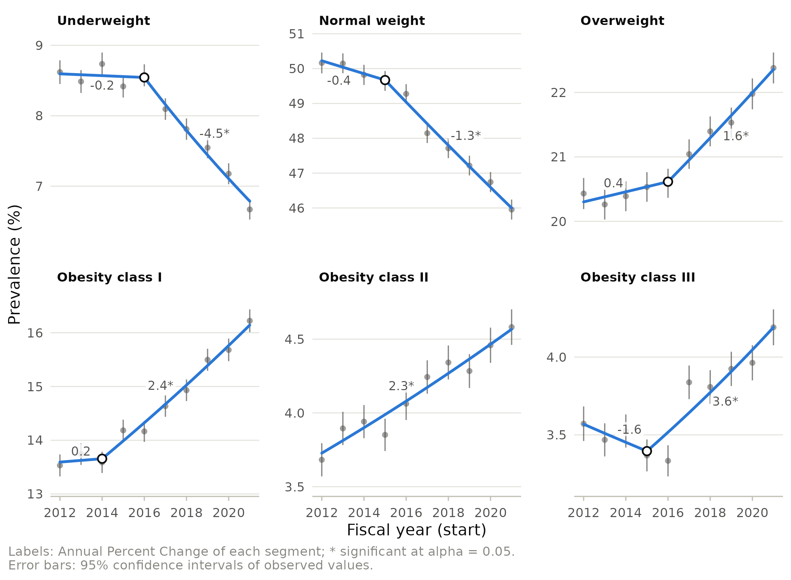
A model other than the selected one
model draws the best fitting model with a given number
of joinpoints instead of the selected one, for example to show a
reviewer the simpler alternative.
autoplot(fit_tb, model = 1)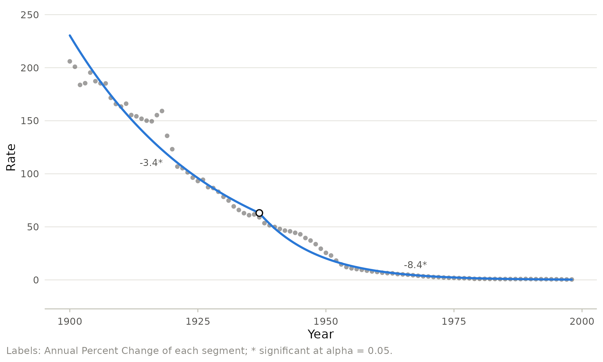
Trend summaries
APCs over time
plot_apc() draws the APC of every segment as a step over
the years it covers, with its confidence interval as a band and a
reference line at zero. It answers “how fast, and when” more directly
than the data.
plot_apc(fit_all, ncol = 3)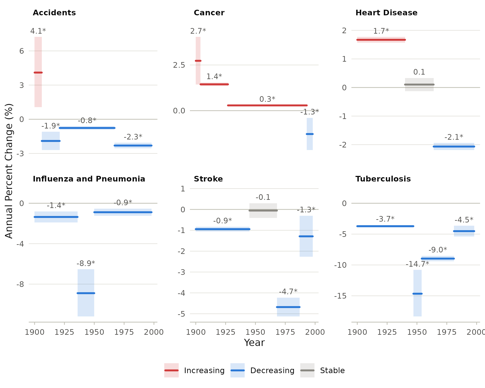
AAPC forest plot
plot_aapc() compares average annual percent changes
across cohorts and ranges. The fit requested the last ten years in
addition to the full range through
jp_control(aapc_last = 10); custom ranges are set with
aapc_ranges.
plot_aapc(fit_all)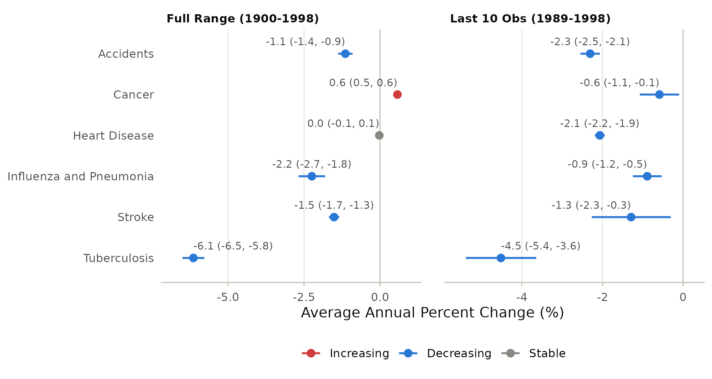
Model selection and diagnostics
All candidate models
plot_models() shows the best fit for every number of
joinpoints of one cohort, with the selection statistic of each in its
panel title and the selected model highlighted.
overlay = TRUE draws them in one panel.
plot_models(fit_tb, ncol = 2)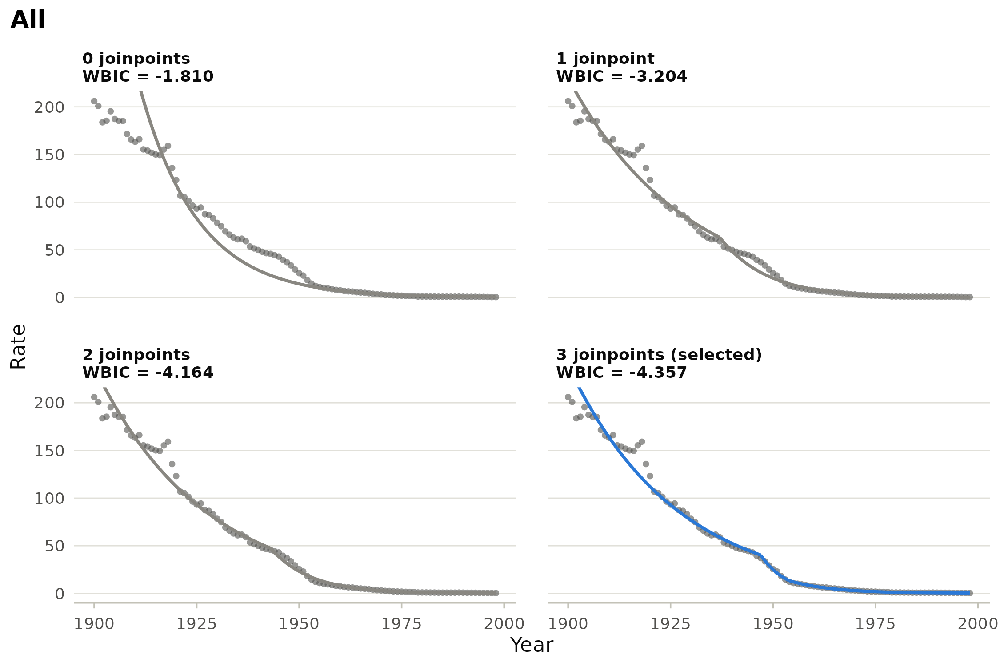
plot_models(fit_tb, overlay = TRUE)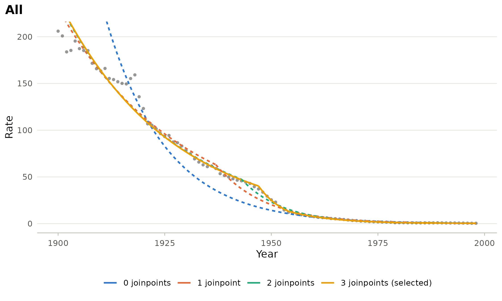
Selection criteria
plot_selection() draws the selection statistic against
the number of joinpoints. For the permutation test it draws the sequence
of tests instead; vignette("model-selection") has an
example.
plot_selection(fit_tb)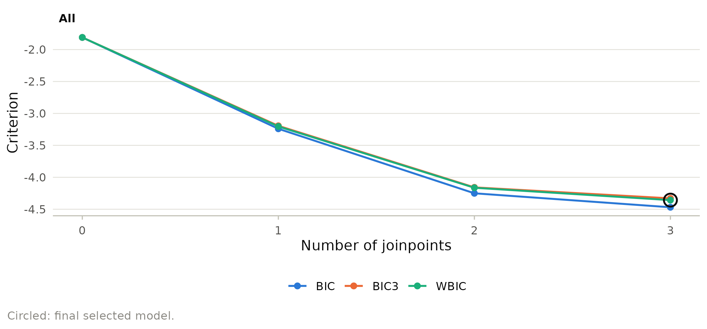
Residuals
plot_residuals() shows the standardized residuals of the
selected model against time, as a normal quantile plot, or as an
autocorrelation function. vignette("uncertainty") discusses
what to do when neighboring residuals are correlated.
plot_residuals(fit_tb)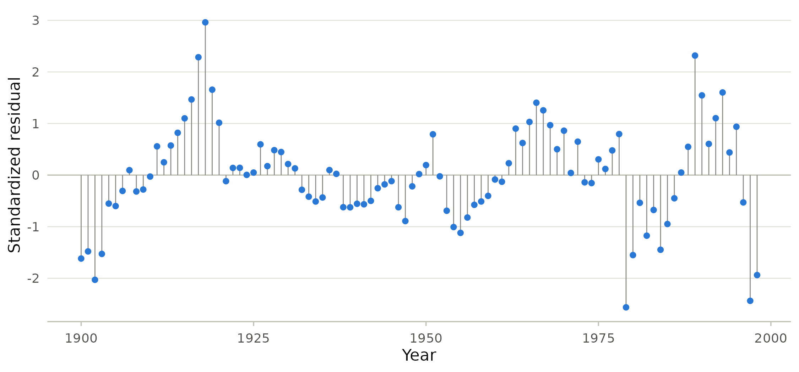
plot_residuals(fit_tb, type = "qq")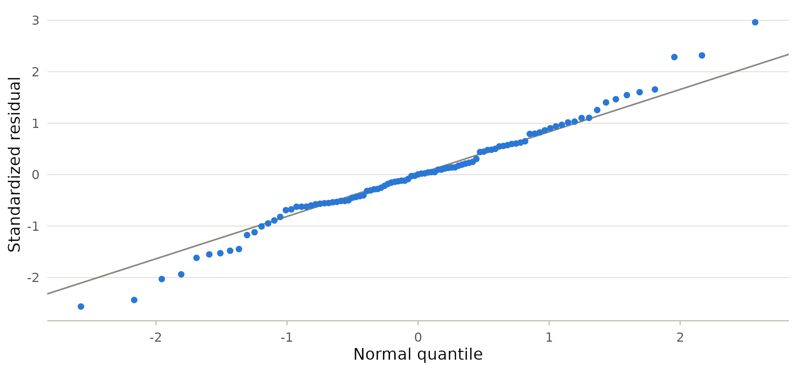
plot_residuals(fit_tb, type = "acf")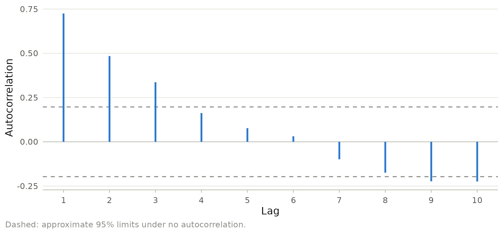
Comparing groups
autoplot() of a jp_compare() result draws
the separately fitted models (solid) and the model fitted under the null
hypothesis (dashed), one panel per pair.
vignette("comparing-groups") explains the tests.
pair <- joinpoint(subset(us_mortality, cause %in% c("Stroke", "Heart Disease")),
year, rate, by = "cause", kmax = 2, ci_method = "parametric")
autoplot(jp_compare(pair, n_perm = 99), log_y = TRUE)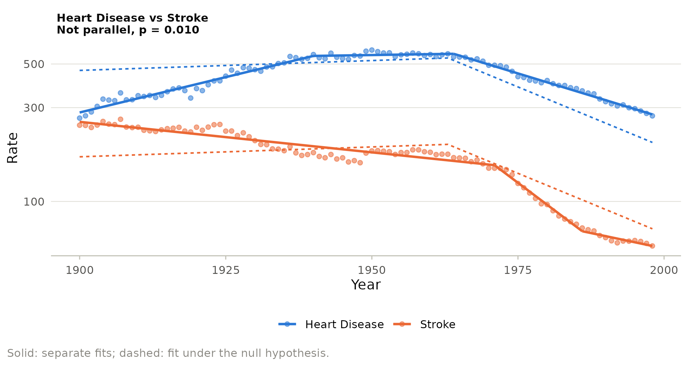
Customizing the figures
Titles, axis labels and captions
labs() replaces the automatic labels and adds a title
and subtitle. A caption given here replaces the automatic note that
explains the labels, band and error bars. expression()
writes units with superscripts, as in
y = expression("Mean BMI (kg/m"^2 * ")").
autoplot(fit_tb) +
labs(title = "Tuberculosis mortality fell throughout the century",
subtitle = "The decline was steepest from 1947, when streptomycin came into use",
x = NULL, y = "Deaths per 100,000 (age adjusted)",
caption = "Source: CDC National Vital Statistics System, HIST293.")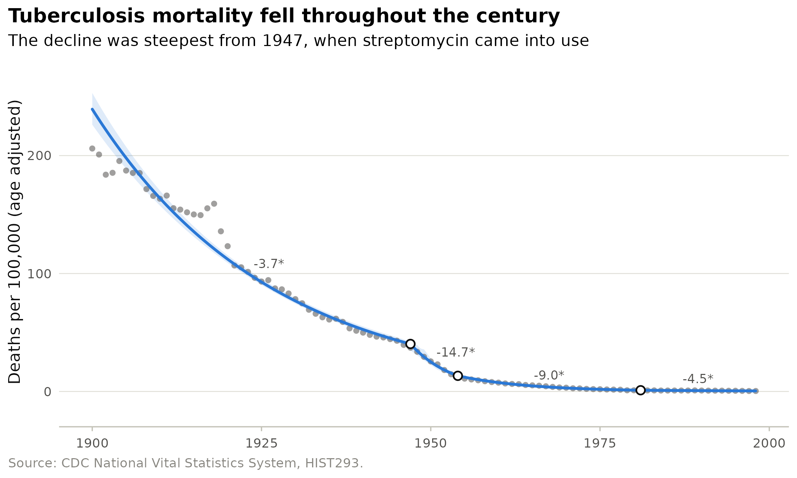
Axes
The x axis is free to change. Breaks every twenty years, for example:
autoplot(fit_tb) +
scale_x_continuous(breaks = seq(1900, 2000, by = 20))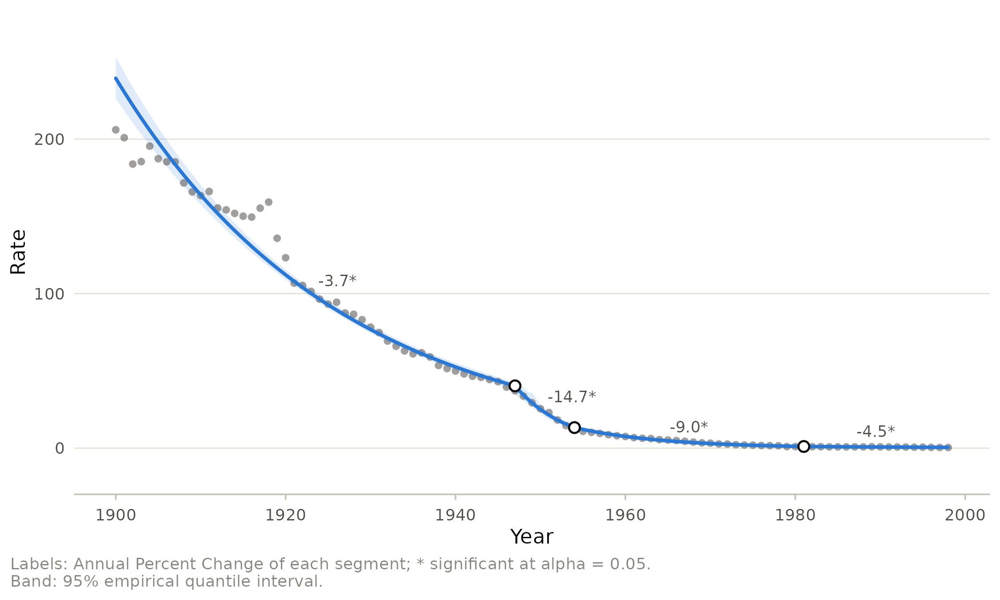
autoplot() sets the y scale itself, with room around the
curves for the segment labels, and ggplot2 notes when that scale is
replaced. To change the y axis, keep the room by passing the expansion
autoplot() uses: mult = 0.12 with APC labels
(the default), 0.2 with labels = "ci" and
0.05 without labels.
autoplot(fit_bmi, cohorts = 6) +
scale_y_continuous(labels = function(v) paste0(v, "%"),
expand = expansion(mult = 0.12)) +
labs(x = "Fiscal year (start)", y = "Prevalence")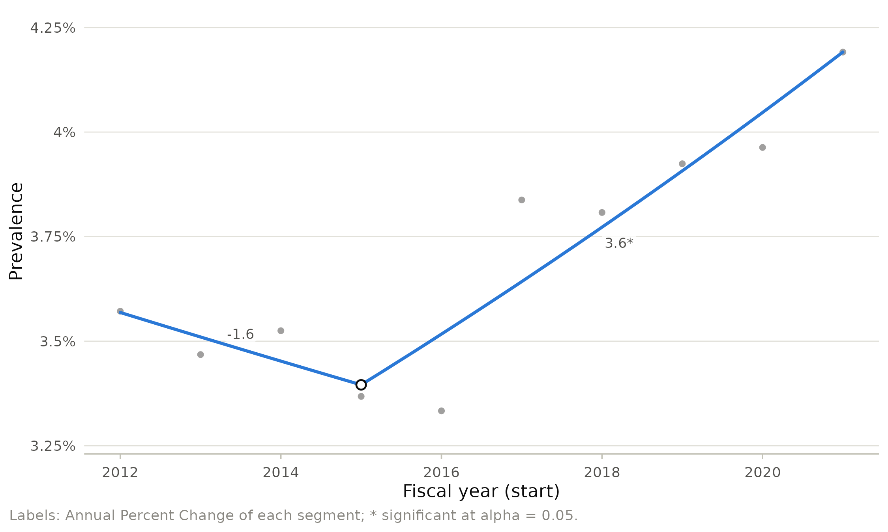
Text size and fonts
theme_joinpoint() is the theme of every figure. Add it
again with a larger base_size for slides or a smaller one
for a narrow journal column, and set base_family to a font
installed on your system.
autoplot(fit_tb) + theme_joinpoint(base_size = 16)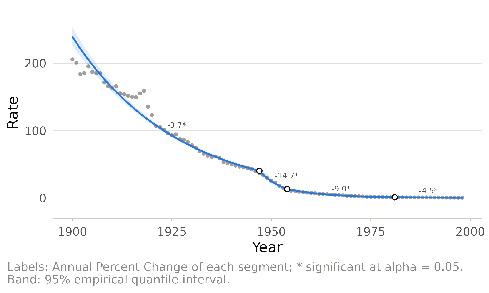
Any complete ggplot2 theme works too, followed by
theme() for details:
autoplot(fit_tb) +
theme_classic(base_size = 12) +
theme(plot.title.position = "plot")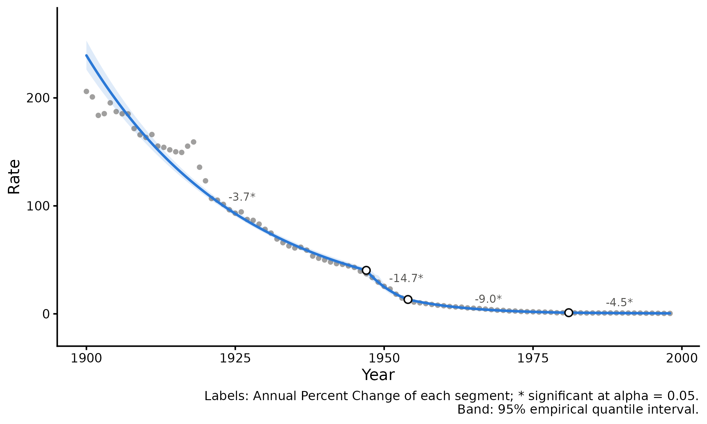
Colors
The qualitative palette of scale_color_joinpoint() has
eight colors, ordered so that neighboring colors stay distinguishable
under the common forms of color vision deficiency. Use it in any ggplot2
figure, together with theme_joinpoint(), to give your own
figures the same look:
ggplot(us_mortality, aes(year, rate, color = cause)) +
geom_line(linewidth = 0.7) +
scale_y_log10() +
scale_color_joinpoint(name = NULL) +
theme_joinpoint() +
labs(x = NULL, y = "Deaths per 100,000")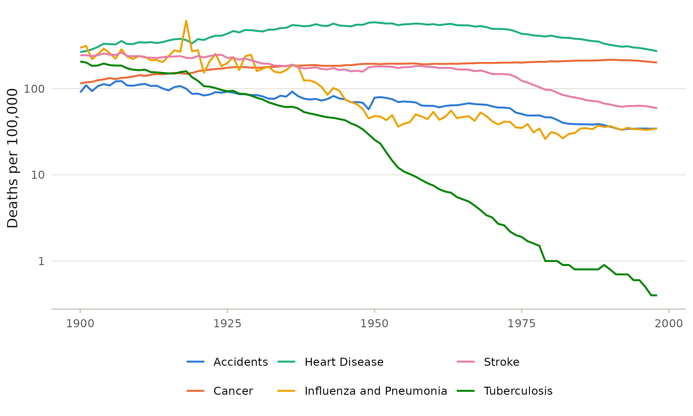
To use other colors in a figure colored by cohort, replace the scale for both the color and the fill aesthetics, since the fitted bands are filled in the color of their cohort:
autoplot(fit_all, layout = "overlay", cohorts = c(2, 3, 5), log_y = TRUE) +
scale_color_manual(values = c("#0B2540", "#2A78D6", "#7F8FA6"),
aesthetics = c("colour", "fill"), name = NULL)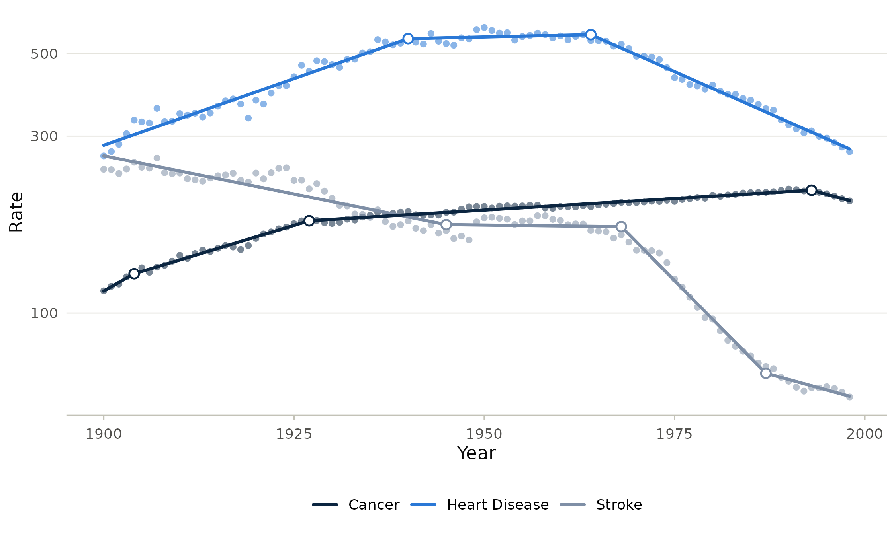
Figures built from the result tables
Every result is also a data frame, so any figure can be drawn from
scratch. as.data.frame() returns the observed and modeled
values with the segment and APC of each point, joinpoints()
the joinpoint locations with their intervals, and apc() the
segment estimates. Here, the periods between joinpoints are shaded and
annotated with their APCs. The shaded rectangles reach beyond the data
and coord_cartesian() crops them to the panel, which works
on a logarithmic axis too:
pts <- as.data.frame(fit_tb)
seg <- apc(fit_tb)
seg$label <- sprintf("%.1f%%", seg$estimate)
lim <- range(pts$observed, pts$modeled)
ggplot(pts, aes(x)) +
geom_rect(data = seg, aes(xmin = start, xmax = end, ymin = lim[1] / 10,
ymax = lim[2] * 10, fill = factor(segment %% 2)),
inherit.aes = FALSE, alpha = 0.25, show.legend = FALSE) +
geom_point(aes(y = observed), color = "#7F8FA6", size = 1.2) +
geom_line(aes(y = modeled), color = "#2A78D6", linewidth = 1) +
geom_text(data = seg, aes(x = (start + end) / 2, y = Inf, label = label),
vjust = 1.5, size = 3.5, inherit.aes = FALSE) +
scale_fill_manual(values = c("white", "#DCE8F7")) +
scale_y_log10() +
coord_cartesian(ylim = lim) +
theme_joinpoint() +
labs(x = NULL, y = "Deaths per 100,000")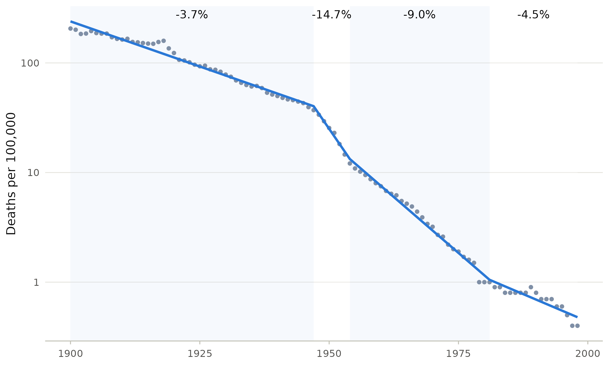
Saving figures
ggsave() writes a figure at the size it will be printed.
Journals usually ask for widths of about 85 mm (one column) or 175 mm
(two columns), at least 300 dpi for raster images, or a vector format
such as PDF. Choose the size first and set base_size to fit
it, rather than scaling a large figure down, so the text ends up at the
intended size.
p <- autoplot(fit_tb) + theme_joinpoint(base_size = 9)
ggsave("tuberculosis.pdf", p, width = 85, height = 60, units = "mm")
ggsave("tuberculosis.png", p, width = 85, height = 60, units = "mm",
dpi = 600, bg = "white")Add alternative text to figures that are published online. In R
Markdown and Quarto documents, the fig.alt chunk option
sets it, as on this page.